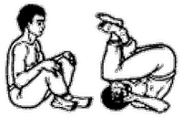

<- back
Next up: Удав меняет кожу
Свернулись в клубок

Исходное положение: Сидим, скрестив согнутые в коленях ноги, правая сверху, ладонями обхватили одноименные колени.
На выдохе перекатываемся на спину, голову наклоняем, прижимая подбородок к груди. При этом согнутые в локтях руки держим перед грудью и немного справа, как бы прикрывая голову, ладони раскрыты, большие пальцы отставлены и касаются друг друга. На вдохе возвращаемся в исходное положение.
Повторяем упражнение 7 раз.
При перекатах назад следите за тем, чтобы ноги не отставали от движения тела и, наоборот, при перекатах вперед – тело не отставало от ног. Спина должна быть максимально выгнута.
Next up: Удав меняет кожу